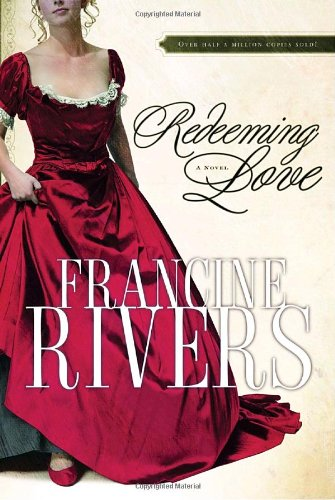
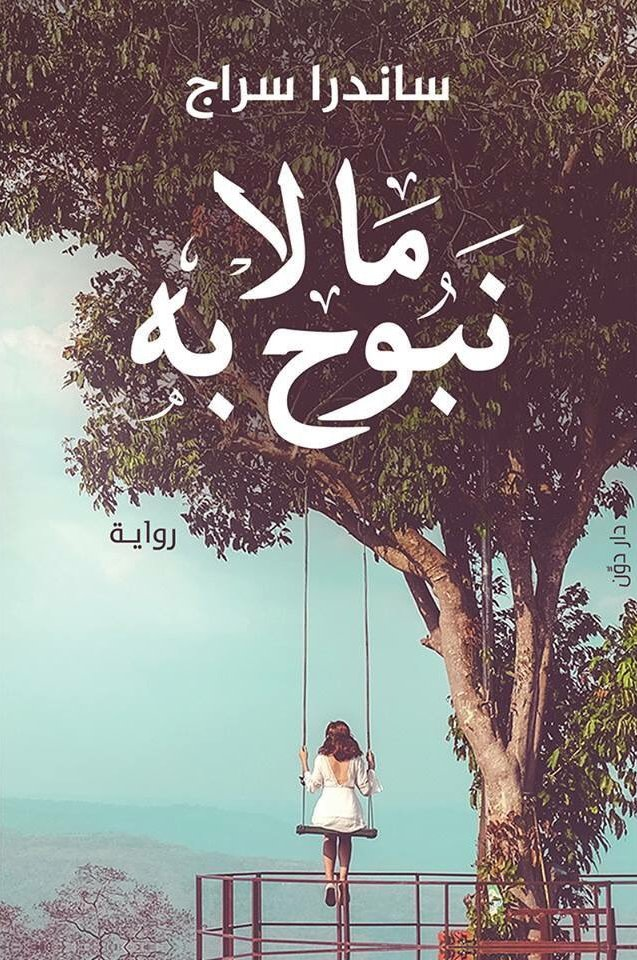

وصف الكتاب : أخذنا روايه ( هيبتا ) الي ذلك العالم الذي أهلكه الجميع بحثا ..
ذلك العالم الذي رغم تكرار قصصه و رواياته الا أن الجميع فيه يقع في نفس الأخطاء , و يعيد نفس الأحداث , و يتألم نفس الألم ...
خلال محاضرة مدتها ست ساعات يأخذنا " أسامه " المحاضر الي
حالات نادره ..
و رغم ندرتها لن تستطيع الا أن تجد نفسك فيها
في عالم الحب و الامل و الألم .. من خلال حالات نعيشهم و نفهم منهم تلك المراحل السبع التي لخصت كل القواعد
"قواعد ال "هـيـبـتـا ..
للكاتب/المؤلف : محمد صادق .
دار النشر : دار الرواق .
سنة النشر : 2016م / 1437هـ .

Redeeming love
Redeeming Love is a historical romance based on “Hosea,”
a book of the bible. Written by Francine Rivers and published in 1991,
it is the story of a prostitute who is loved unconditionally by one man and the fall and rise of her life.
Harry Potter
Harry Potter is a series of novels by J.K. Rowling.
It is about a young boy named Harry Potter and his adventures as he attends Hogwarts School
of Witchcraft and Wizardry, learns how to perform magic and comes face to face with his archenemy, Lord Voldemort.

ما لا نبوح به
كم مرة إنفصلنا؟ لا أعرف، كل ما أعرفه أن البعد عنه يربكني، كنت أريد أن أعود، في كل مرة نبتعد كنتُ أعود دائماً، أرجع وأنا كُلي أمل أن يتغير، أن يصبح لي، أن يتخلى عن حماقاته ويراني على حقيقتي ولو لمرة واحدة، كنت أريده أن يكون مثالياً وأن يكون لي وحدي، كنتُ أريد كل شيء وحدي! ولم يكن هو يشعر بأي شيء .. تركني هنا في المنتصف تماماً، لا أنا أكملت الطريق وحدي، ولا أنا بقيت معه، صرتُ في هذا المنتصف اللعين، لا لون لي!
تسافر بطلة الحكاية بحثاً عن نفسها، تقابل حبها الحقيقي في تلك المدينة الجميلة، تتعلق به، غير أن أحلامنا عن الحب ربما تبدو باهتة إذا جاءت في غير موعدها، لذلك تعود إلى الأسكندرية بحثاً عن حب قديم لطالما أرهقها، في المنتصف .. تكتشف أنها وحدها تحتاج إلى أن تحب نفسها قبل أن يحبها الآخرين، فهل تتغير تفاصيل الحكاية ؟!